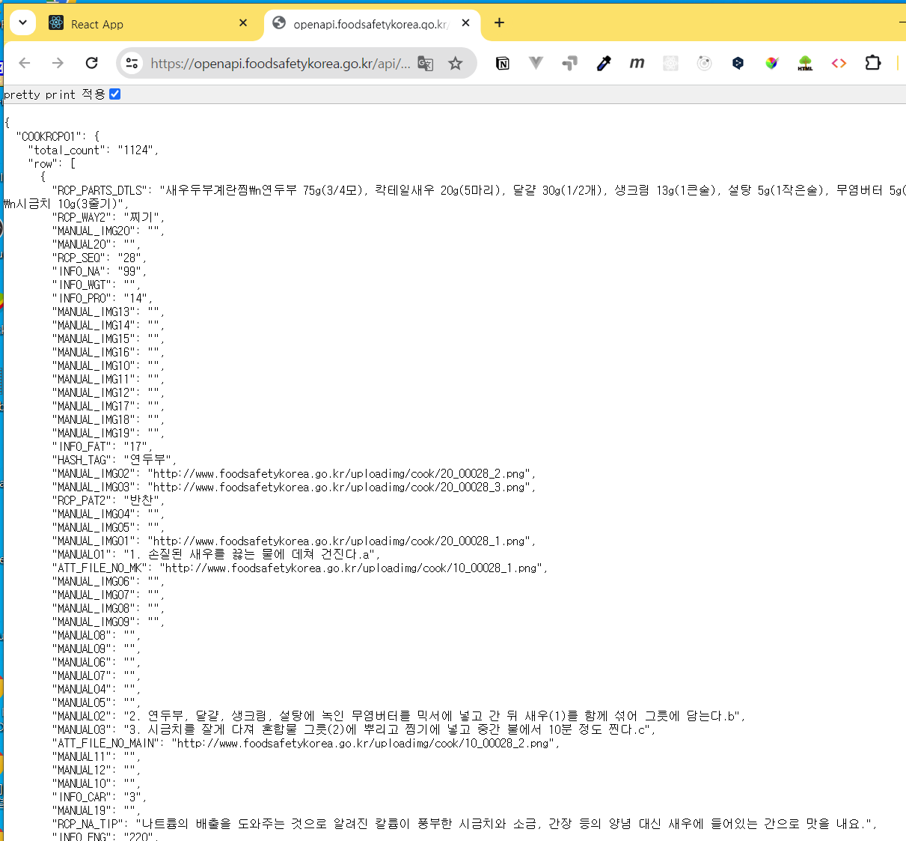
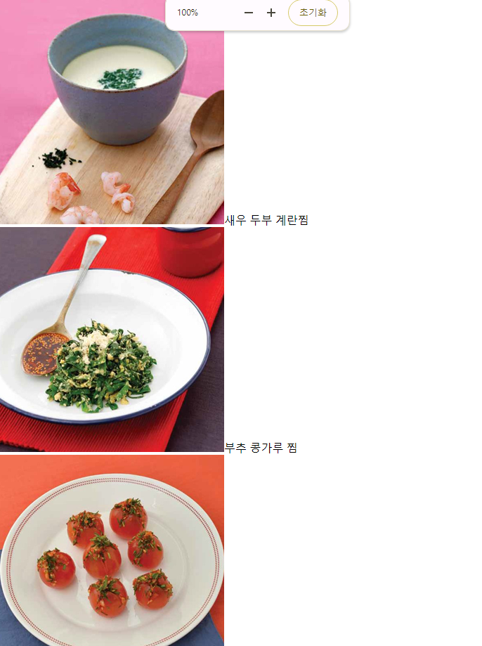
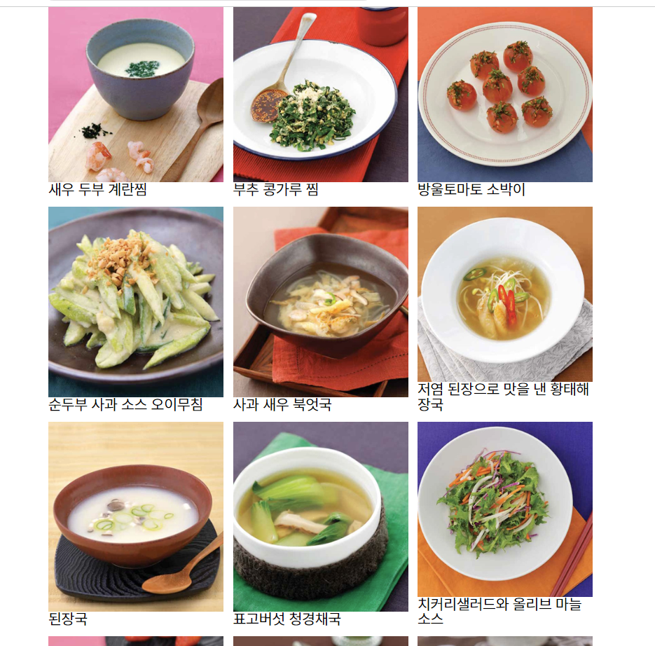
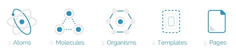
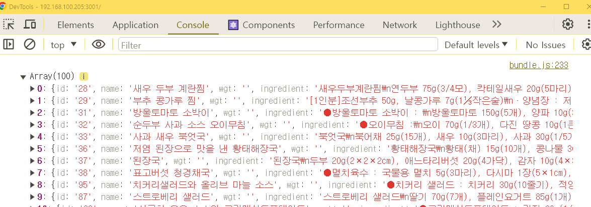
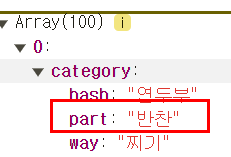
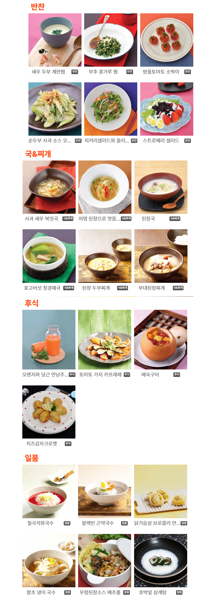

#
8-카테고리 나누기
#
목차
1. 시작파일 2. 연관링크 3. 메인화면 만들기 3.1. 폴더정리 3.2. List 컴포넌트 만들기 3.2.1. 레시피 데이터 다시 살펴보기 3.2.2. 데이터 가공
3.3. 데이터전달하기 3.4. 스타일링하기
4. 컴포넌트 파일 구성 하기 4.1. 컴포넌트 구조만들기 4.2. ListGroup 에서 필터링하기 4.3. Title.js 4.4. List.js
5. 깃허브에 올리기 6. 완료파일
#
1. 시작파일
만약 이전 파일이 없을 경우 아래의 파일을 다운로드 하여 진행한다
시작 파일
- 다운로드 받은 start.zip 파일의 압축을 푼다
- 새 리액트 앱을 설치한다. 리액트 앱 설치를 모를경우 아래 링크를 참고한다.
- 리액트 앱의 설치가 왼료 되었으면 1번의 파일압축을 푼다
- 압축을 풀게 되면 start/src 폴더가 있다.
- 2번의 src폴더에 4번의 src 폴더를 덮어 씌운다.

- 2번의 폴더를 루트로 선택하여 vscode를 연다.
- vscode 의 터미널에 npm start 를 입력하여 앱을 실행한다.
#
2. 연관링크
#
3. 메인화면 만들기
#
3.1. 폴더정리
- src폴더에는 아래의 파일만 남기고 모두 삭제한다.
src/
index.css App.js index.js
#
3.2. List 컴포넌트 만들기
src/components 폴더 생성
components/List.js 파일 생성
List.js에 아래의 코드 작성
src 폴더에 components 폴더를 생성하고 List.js 파일을 새로 만들고 다음과 같이 컴포넌트의 기본 골격을 작성해 보자.
src/components/List.jsimport React from 'react'; const List = () => { return ( <> <div>List</div> </> ); }; export default List;
#
3.2.1. 레시피 데이터 다시 살펴보기
[Console] 탭에 출력된 내용은 확인하기 불편하니까 http://openapi.foodsafetykorea.go.kr/api/내서비스키/COOKRCP01/json/1/30 에 접속해서 우리가 사용할 데이터를 다시 확인해 보자. 
https://www.foodsafetykorea.go.kr/api/newDatasetDetail.do 에서 응답하는 데이터중 필요한 것만 추출하여 컴포넌트를 생성할것이다.
아래는 식품안전나라에서 제공하는 레시피DB 의 요청/응답정보 안내이다
#
3.2.2. 데이터 가공
응답데이터를 살펴보면
MANUAL이라는 접두사로 시작하는 키는 레시피 설명이며MANUAL_IMG01키가 20번 까지 있으며 대체로MANUAL_IMG06까지 데이터가 있는것으로 보인다. 이런식으로 필요한 데이터가 무엇인지 파악하자.App.js에 응답 데이터중 사용할 데이터를 data 에 저장한다
요청 주소의 파라미터를 수정하여 요청데이터 갯수를 늘린다.src/App.jsimport { useState, useEffect } from 'react'; import axios from 'axios'; function App() { const [loading, setLoading] = useState({ state: true, data: [] }); const getDB = async () => { try { const { data } = await axios.get('http://openapi.foodsafetykorea.go.kr/api/서비스키/COOKRCP01/json/1/30'); const { COOKRCP01: { row }, } = data; setLoading({ state: false, data: row }); console.log(row); } catch (error) { console.error(error); } }; useEffect(() => { getDB(); }, []); return ( <div className='App'> {loading.state ? ( <h1>로딩중입니다...</h1> ) : ( loading.data.map((el) => ( <div key={el.RCP_SEQ}> <span style={{ color: 'red' }}>레시피명: {el.RCP_NM}</span> <span>조리방법: {el.RCP_WAY2}</span> <div> <span>{el.MANUAL01}</span> <span>{el.MANUAL02}</span> <span>{el.MANUAL03}</span> </div> </div> )) )} </div> ); } export default App;응답데이터를 가공한다.
우선 필요한 데이터는 메인화면에 표시할썸네일이미지,레시피명,아이디이고 API 문서에서 확인해보면
RCP_SEQ, RCP_NM, ATT_FILE_NO_MAIN의 키로 응답된다.
const initData = row.map(() => {});에 응답데이터를 분해 한다.src/App.js... const getDB = async () => { try { const { data } = await axios.get('http://openapi.foodsafetykorea.go.kr/api/서비스키/COOKRCP01/json/1/30'); const { COOKRCP01: { row }, } = data; const initData = row.map(({ RCP_SEQ, RCP_NM, ATT_FILE_NO_MAIN }) => ({ RCP_SEQ, RCP_NM, ATT_FILE_NO_MAIN, })); setLoading({ state: false, data: initData }); } catch (error) { console.error(error); } }; setLoading({ state: false, data: initData }); } catch (error) { console.error(error); } }; ...
#
3.3. 데이터전달하기
App컴포넌트에서 List컴포넌트로 데이터를 전달한다.
기존의 data.map 코드를 삭제후 그자리에 List 컴포넌트 를 임포트한다.
이때 컨테이너 역할을 할 inner와 블록역할을 할 group 요소로 래핑한다.
그리고 props 를 내려준다.
import List from './components/List';
...
return (
<div className='App'>
{loading.state ? (
<h1>로딩중입니다...</h1>
) : (
<div className='inner'>
<div className='group'>
{loading.data.map((data) => <List key={data.RCP_SEQ} data={data} />)}
</div>
</div>
)}
</div>
);List컴포넌트는 card 역할을 하게 될것이다.
css파일을 연결하고 최상위 요소에 클래스 네임을 작성한후 이미지와 타이틀요소를 추가한다.
콘솔로그로 부모컴포넌트가 전달하는 데이터의 구조를 확인한다.
import React from 'react';
import './List.css';
const List = (props) => {
console.log(props);
return (
<div className='list'>
<img src={''} alt={''} />
<h2>{''}</h2>
</div>
);
};
export default List;List 컴포넌트에서 App에서 전달할 props를 내려받아 화면에 렌더링한다
src/components/List.jsconst List = ({ data: { RCP_NM, ATT_FILE_NO_MAIN } }) => { return ( <div className='list'> <img src={ATT_FILE_NO_MAIN} alt={RCP_NM} /> <h2>{RCP_NM}</h2> </div> ); };
#
3.4. 스타일링하기
index.css 작성
css파일이 많아져도 불편하므로 공통스타일은 index.css에 작성한다.src/index.css@import url(https://qwerewqwerew.github.io/source/style/reset.css); body { font-size: 1.6rem; } .inner { width: min(800px, 80%); margin: auto; } .group { display: flex; flex-wrap: wrap; gap: 1rem; margin: 5rem auto; }List.css 작성
src/components/List.css.list { display: flex; flex-direction: column; width: min(25%, 20rem); } img { width: 100%; height: 100%; object-fit: cover; } h2 { padding: 0.5vw 0 1vw; font-size: 2rem; font-weight: 500; overflow: hidden; text-overflow: ellipsis; white-space: nowrap; }
#
4. 컴포넌트 파일 구성 하기
리액트에서 컴포넌트 파일을 구성하는 방법은 여러 가지가 있으며, 프로젝트의 규모나 팀의 선호도에 따라 달라질 수 있다. 보편적인 리액트 컴포넌트 파일 구성 방법 중 몇 가지를 살펴List보자.
#
• 기능별 (Feature-based) 구조
이 방식은 관련된 기능이나 컴포넌트를 함께 묶어서 관리한다.
'유저 프로필'과 관련된 컴포넌트, 상태 관리 로직, 스타일을 한 폴더 안에 두는 방식.
/src
/components
/UserProfile
UserProfile.jsx
UserProfile.styles.js
index.js
/hooks
useUserProfile.js
#
• 파일 종류별 (File-type) 구조
이 방식은 파일의 종류에 따라 폴더를 나누어 관리한다.
모든 컴포넌트는 components 폴더에, 모든 스타일 파일은 styles 폴더에 두는 방식.
/src
/components
Header.jsx
Footer.jsx
UserProfile.jsx
/styles
Header.css
Footer.css
UserProfile.css
/hooks
useUserProfile.js
#
• 페이지별 (Page-based) 구조
이 구조는 각 페이지를 기준으로 컴포넌트와 관련 파일들을 나누어 관리한다.
홈페이지와 관련된 컴포넌트를 ListPage 폴더에, 유저 프로필 페이지와 관련된 것을 UserProfilePage 폴더에 두는 방식.
/src
/pages
/ListPage
ListPage.jsx
ListPage.styles.js
/UserProfilePage
UserProfilePage.jsx
UserProfilePage.styles.js
#
• Atomic Design
Atomic Design은 인터페이스를 작은 단위(원자)부터 큰 단위(페이지)까지 구성하는 방법론. 
버튼이나 인풋 같은 가장 작은 단위를 atoms, 그것들을 조합한 카드나 리스트를 molecules, 그것들을 다시 조합한 섹션을 organisms, 그리고 그것들을 통해 구성된 템플릿과 페이지가 있습니다.
/src
/components
/atoms
Button.jsx
Input.jsx
/molecules
SearchForm.jsx
/organisms
Header.jsx
/templates
PageTemplate.jsx
/pages
ListPage.jsx각 방식의 선택은 프로젝트의 특성과 팀원들의 선호에 따라 달라질 수 있으며, 때로는 이러한 방식들을 조합하여 사용하기도 한다. 중요한 것은 일관성을 유지하고 팀 내에서 명확한 규칙을 설정하는 것이다.
#
• 3줄요약
- 프로젝트의 단위가 커질 수록 컴포넌트의 갯수도 많아지므로 효율적인 관리가 중요해진다.
- 처음부터 컴포넌트를 어떤 기준으로 그룹화 할것인지를 정하고 규칙을 유지 하는 것이 중요하다.
- 일반적으로 공동 작업자와 협의하여 컴포넌트를 구성하는 것이 바람직하다.
우리는 기능별 구조 형식을 베이스로 사용 할 것이다.
#
4.1. 컴포넌트 구조만들기
리액트의 데이터 흐름은 단방향 으로 상위 컴포넌트에서 하위 컴포넌트로 전달되어야 하므로 최상위 컴포넌트인 App 에서 모든 레시피 데이터를 저장한후 하위 컴포넌트로 전달하도록 한다.
각 컴포넌트의 역할은 다음과 같다
/src─┬
├──App.js (최상위 컴포넌트로 레시피 데이터를 ListGroup 으로 전달한다)
└──/components─┬
├── ListGroup.js (App에서 모든 데이터를 전달받아 요리 종류별로 나눈후 하위 컴포넌트로 전달한다)
├── List.js
└── Title.jscomponent 폴더에 ListGroup.js 를 생성한다
ListGroup.jsimport './ListGroup.css'; const ListGroup = ({ data }) => { console.log(data); ); }; export default ListGroup;App 컴포넌트에서 ListGroup 을 임포트 한다
App.jsimport ListGroup from './components/ListGroup'; ... <div className='App'> {loading ? ( <h1>로딩중입니다...</h1> ) : ( <div className='inner'> <ListGroup data={data}/> </div> )} </div>
#
4.2. ListGroup 에서 필터링하기
ListGroup 에 props 를 작성하여 전달받은 데이터를 확인해보자

category 키 하위의 part 값이 같은것끼리 필터링한다.

조건값으로 사용할 변수 title을 만들고 초기화한다.
ListGroup.jsimport './ListGroup.css'; import List from './List'; import Title from './Title'; const ListGroup = ({ data }) => { console.log(data); const title = ['반찬', '국\u0026찌개','후식','일품']; ...filter 함수를 사용하여 데이터를 골라내자
ListGroup.jsconst side = data.filter((item) => item.category.part === title[0]); const soup = data.filter((item) => item.category.part === title[1]); const dessert = data.filter((item) => item.category.part === title[2]); const special = data.filter((item) => item.category.part === title[3]);필터링한 데이터를 하위 컴포넌트에 전달한다.
ListGroup.jsreturn ( <> <Title title={title[0]} /> <article className='group'> {side.map(({ id, name, imgs: { main_s, main_l }, category: { part } }) => ( <List key={id} name={name} img_s={main_s} img_l={main_l} cate={part} /> ))} </article> <Title title={title[1]} /> <article className='group'> {soup.map(({ id, name, imgs: { main_s, main_l }, category: { part } }) => ( <List key={id} name={name} img_s={main_s} img_l={main_l} cate={part} /> ))} </article> <Title title={title[2]} /> <article className='group'> {dessert.map(({ id, name, imgs: { main_s, main_l }, category: { part } }) => ( <List key={id} name={name} img_s={main_s} img_l={main_l} cate={part} /> ))} </article> <Title title={title[3]} /> <article className='group'> {special.map(({ id, name, imgs: { main_s, main_l }, category: { part } }) => ( <List key={id} name={name} img_s={main_s} img_l={main_l} cate={part} /> ))} </article> </> );ListGroup.css
ListGroup.css.group { display: flex; flex-wrap: wrap; gap: 1rem; }
#
4.3. Title.js
ListGroup 에서 전달하는 props를 받아 렌더링하자
css 는 인라인방식으로 작성해보자
Title.jsconst Title = ({ title }) => { return ( <> <h2 style={{ fontSize: '30px', color: '#ff5722', padding: '10px', fontWeight: '900' }}>{title}</h2> </> ); }; export default Title;
#
4.4. List.js
ListGroup 에서 전달하는 props를 받아 렌더링하자
List.jsimport './List.css'; const List = ({ name, img_s, img_l, cate }) => { return ( <> <div className='list'> <img src={img_s} alt={name} /> <div className='text_wrap'> <span className='title_txt'>{name}</span> <span className='sub_txt'>{cate}</span> </div> </div> </> ); }; export default List;List.css 를 작성한다
List.css.list { display: flex; flex-direction: column; width: min(25%, 20rem); } img { width: 100%; height: 100%; object-fit: cover; } .text_wrap { display: flex; justify-content: space-around; align-items: center; padding: 0.5vw 0 1vw; } .title_txt { font-size: 1vw; overflow: hidden; text-overflow: ellipsis; white-space: nowrap; color: #555; } .sub_txt { background: #555; color: #fff; padding: 3px; border-radius: 3px; white-space: nowrap; }
#
5. 깃허브에 올리기
#
6. 완료파일